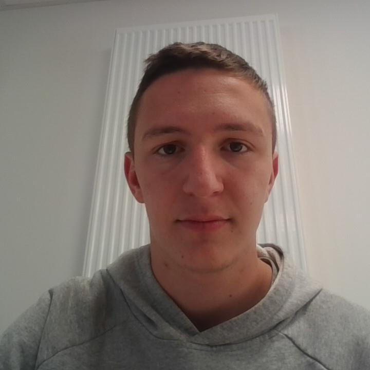

Étudiant BTS SIO SLAM
Bienvenue !
Je suis Mathis, étudiant en BTS SIO SLAM à Rouen. Passionné par le développement web et mobile, je crée des applications innovantes en utilisant les dernières technologies. J'aime travailler en équipe, relever de nouveaux défis et apprendre constamment. En dehors du code, je pratique le volley-ball et je suis gamer dans l'âme.
📄 Télécharger mon CV2+
Années d'études
2+
Projets réalisés
100%
Motivation